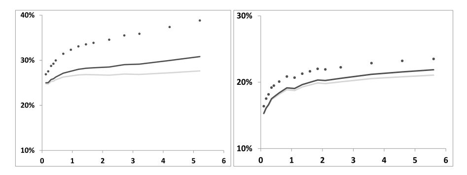
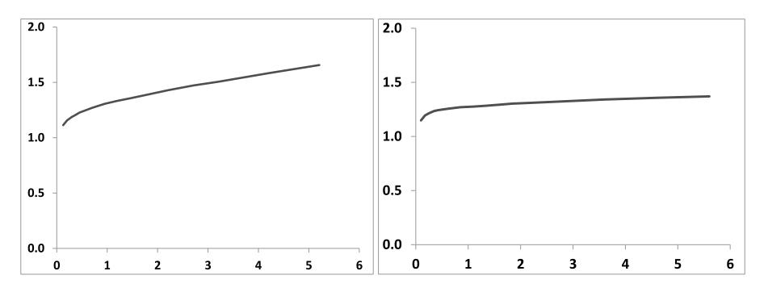
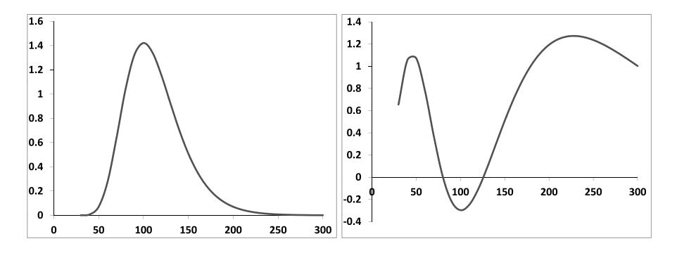

第三章：远期起始期权
——Cliquet 的定价风险与局部波动率的局限
本笔记基于 Bergomi《Stochastic Volatility Modeling》第三章，按原书行文结构整理，兼顾数学推导的经济直觉与实务启发。
目录
导言
第二章建立了局部波动率模型的完整体系，并在最后指出其根本局限：模型对未来偏斜的预测系统性偏低，触障时刻或远期起始时刻的隐含波动率结构会大幅弱于当前观测值。第三章用一类具体产品——远期起始期权（forward-start options，又称 cliquet）——检验这一局限的实际后果。
Cliquet 的支付形如 ，完全取决于两个未来时刻之间的相对回报，与初始现货 无关。其定价不依赖"今天的微笑"，而依赖" 时刻的市场微笑形态"——即远期微笑风险（forward-smile risk）。
本章的分析路径具有范例价值：先问"风险结构是什么、哪些工具能对冲"，再评估模型是否能正确处理这些风险。读完本章可以掌握：
- Cliquet 的三类风险：远期波动率风险、vol of vol 风险、远期微笑风险的来源与对冲方式
- 对数合约与 合约的构造逻辑及其作为对冲工具的性质
- 局部波动率模型对 cliquet 的两类系统性误定价及根源
- 校准到香草微笑对 cliquet 定价的意义与局限
1. Cliquet 的定价与对冲（§3.1）
研究动机
Cliquet 的支付 对 零次齐次， 之前期权的 delta 和 gamma 均为零。这意味着用普通香草期权对冲是低效的：香草期权有 gamma，组合在 移动时会产生错配。本节在时间依赖的 Black-Scholes 框架下，寻找 vega 与现货无关 的对冲工具，并厘清两类不可对冲的残余风险。
1.1 Black-Scholes 框架（§3.1.1）
在含时依赖波动率的 Black-Scholes 模型中，由齐次性，cliquet 的价格为：
其中远期方差定义为：
直觉上，这是把 的积分方差减去 的积分方差，提取 区间上的平均方差。若期限结构平坦（），远期波动率也是 ；若短端高于长端，远期波动率低于当期 ATM。
有意义的前提是积分方差满足凸序条件，即到期日无套利：
之前，cliquet 的 delta/gamma 为零，只暴露于 的变动。到 时刻， 已知，cliquet 退化为到期日 的标准欧式期权。
1.2 欧式支付的复制公式（§3.1.3）
在构造对冲工具前，需要一个基础结论：任意欧式支付可分解为现金、远期加连续行权价密度的香草期权组合。
从恒等式出发，利用 Heaviside 函数积分表示和分部积分，得到：
取 并折现，得到价格复制公式：
经济含义：支付函数的二阶导 是各行权价处的持仓密度。凸支付对应正密度（净买入），凹支付对应负密度（净卖出）。反之，给定密度 ，对应支付就是 对 的两次积分——这是§3.1.2的推导基础。
1.3 Vega 与现货无关的对冲工具：对数合约（§3.1.2 & 3.1.4）
寻找合适密度
设香草期权组合密度为 。由 Black-Scholes 公式的 - 齐次性，行权价 的期权 vega 为 ，组合总 vega 为：
与 无关当且仅当被积函数中不出现 ，即 与 无关，解得：
推导逻辑：令 ，代入后被积函数变为 ，与 无关。这是唯一使 vega 现货无关的密度形式（在 族中，只有 成立）。
对数合约的构造
将 代入式（3.6）对 积分两次，得到支付 ，即对数合约（log contract）。其 Black-Scholes 价格为：
两个关键性质：
① Vega：，正比于积分方差 关于 的导数——这使得对数合约的 vega 与 cliquet 对 、 的敏感性在形式上完全匹配。
② 美元 Gamma 为常数：
与 无关。推论：两份对数合约的组合 的美元 Gamma 恰好相消，等于零——从而 Theta 也为零（Gamma/Theta P&L 配对消去）。
完整对冲组合
其中 。
对 、 的 vega 均为零，gamma 和 theta 均为零。对冲比率 不依赖 和 ，构成静态对冲——持仓建立后无需随现货移动而调整，只在 发生变化时重新平衡一次。
实务注：对数合约本身在场内没有流动性，但**方差互换（variance swap）**在实践中等价于每日 delta 对冲的对数合约（见第五章），可作为替代对冲工具使用。国内市场目前缺乏流动性方差互换，这一对冲路径在 A 股场景下尚不完整。
1.4 对冲组合的P&L分析（§3.1.5）
之前：vol of vol 风险（§3.1.5.1）
将 定义为对数合约的隐含波动率（通过式3.8反解），确保对冲工具以市场价格定价。对组合 展开逐日 P&L，当 时 P&L 为零（gamma/theta 均为零）。
P&L 仅来自 、 的变动，整理后：
关键点：P&L 仅是 的函数，而非 和 的单独函数。一阶项恰好消去（对冲的设计保证了这一点），残余 P&L 从二阶项开始：
这正是vol of vol 风险——每次 波动，都会产生二阶 P&L。对于 ATM 远期看涨期权（）， 近似线性于 ，但关于 是凹的，因此二阶导为负——每次波动都盈利：
因此 ATM 远期看涨的卖方需在报价中扣除这部分预期盈利（降价），而非加价——这与直觉相反，但从 P&L 的角度完全正确。
时刻：远期微笑风险（§3.1.5.2）
到 时刻，cliquet 转变为到期日 的欧式期权。其市场价格为：
而对冲方案隐含的模型价格用的是对数合约隐含波动率 ：
两者之差——"对数合约隐含波动率"与"ATM 看涨期权隐含波动率"在 时刻的差值——即为远期微笑风险。从第二章§2.3的结论已知，对数合约隐含波动率高于 ATMF 隐含波动率（因为偏斜为负，），两者之差约为 （见后文式3.30）。
1.5 定价结论与校准原则（§3.1.6–3.1.8）
完整定价公式
在上述对冲框架下，cliquet 的报价为三部分之和：
- ： 期间 vol of vol 风险对应的价格调整，估计方式是对 的历史或隐含波动率给出保守假设，代入式（3.12）积分
- ： 时刻远期微笑风险的价格调整，估计方式是用历史数据或随机波动率模型给出 时刻微笑与对数合约波动率之差的保守估计
若市场上存在可交易的 cliquet 或方差互换，可用隐含值替代历史值。
两点强调：
- 和 需要模型外的输入（历史 vol of vol 估计，或随机波动率模型参数），不能从香草微笑中直接读取。
- 随时间推移， 需要在 前收敛至零， 需要在 时刻收敛到实际的微笑差值。好的风险管理模型应自动满足这两个条件。
香草微笑对 cliquet 定价的约束：上下界（§3.1.7）
以 ATM 远期看涨 为例，给定 、 的市场微笑，通过线性规划计算模型无关的上下界：
使得对所有 ，策略超复制 cliquet 支付。对偶地，下界 对应次复制策略的最高成本。
Bergomi 给出的数值结果（ 年， 年，双端微笑均平坦，，零利率）：
| 场景 | ATM 远期看涨的 界 |
|---|---|
| 仅约束 、 微笑 | ， |
| 加入 ATM 远期看涨约束（20%） | 界收窄甚微 |
| 加入 90%/110% 远期价差约束 | ， |
结论：香草微笑对 cliquet 价格的约束极弱，价格范围跨度可达 ATM 波动率的2倍以上。只有当加入风险结构相似的 cliquet 约束时，界才会显著收窄。校准模型到香草微笑并期望由此约束 cliquet 价格，是不合理的。
对中国市场的参照：沪深300ETF期权目前没有场外 cliquet 的活跃市场，雪球、小雪球等结构化产品在一定程度上涉及远期微笑敞口，但定价惯例各异。上界/下界的宽泛性说明，国内以局部波动率或单纯香草微笑校准模型来定价含路径依赖的结构产品，定价不确定性可能远大于模型本身给出的"精确"价格。
1.6 FVA 与 合约（§3.1.9）
问题扩展
外汇市场常见的远期波动率协议（Forward Volatility Agreement，FVA），支付形如 ，更一般地为 。相比 ，这类支付中出现了 的绝对水平——价格 现在正比于 。因此对冲工具的 vega 也应正比于 ，而非与 无关。
合约的构造
在式（3.4）中，要使 ，需要 。对 积分两次得到支付 ——即 合约。其 Black-Scholes 价格为：
对 的敏感性：，正比于 ——与 FVA 对 、 的敏感性（式3.21–3.22）形式完全一致。
对冲组合：
同样是静态对冲，gamma 和 theta 均为零，vega 对 、 均消去。此外，由于 vega 正比于 ，vanna（）也恰好为零——spot/vol 协方差风险自动消除，无需单独对冲。这一点与用 密度对冲普通 cliquet 不同，是 合约作为对冲工具的额外优势。
残余 P&L 仍仅含 vol of vol 项：
形式上与式（3.12）完全类似，差别仅在于多了 作为前因子。
2. 局部波动率模型中的远期起始期权（§3.2）
研究动机
§3.1 厘清了 cliquet 的风险结构，并指出 （vol of vol 风险）和 （远期微笑风险）需要借助模型外的参数估计。第二章已经指明局部波动率模型的未来偏斜系统性偏低——本节用第二章的弱局部性近似，定量推导局部波动率模型对 和 的具体预测，说明两者均被低估，从而给出结论：局部波动率模型不适合 cliquet 定价。
2.1 对数合约隐含波动率的近似（§3.2.1）
对数合约是凹函数，可以定义其隐含波动率 。与第二章对香草期权的处理类似，利用弱局部性近似，对数合约因其美元 Gamma 为常数（式3.10），推导大幅简化。
起点是第二章的加权平均公式（式2.35）。由于对数合约的美元 Gamma 等于常数 ，分子中的密度权重退化为均匀权重，最终得到：
其中 。对比第二章式（2.40）对香草期权的表达式，两者形式相同，差别仅在于权重：对数合约用均匀权重，香草期权用 Gamma 加权。
取局部波动率形式 ，在 附近展开，保留 项、忽略 项，得到两个结果：
式（3.30）的经济含义：对于向下倾斜的微笑（，典型股票指数），对数合约隐含波动率高于 ATMF 隐含波动率。直觉上，对数合约在行权价上的权重均匀分布（ 密度），低行权价区域的高隐含波动率拉高了整体平均，而 ATMF 隐含波动率只代表一个点。差值约为 ，对典型的1年期微笑（，），差值约为 ——量级很小，但在远期微笑定价中累积效应不可忽视。
式（3.31）说明：对数合约隐含波动率随现货的移动速率，与 ATMF 隐含波动率的移动速率相同。这来自于对数合约 vega 与现货无关的性质：无论 在哪里， 对 的敏感性都与 ATMF 保持一致。
图3.1展示了 Euro Stoxx 50 的实际数据与式（3.30）的近似精度：

图3.1：Euro Stoxx 50 的 （实点）、（浅线）及式（3.30）近似（深线），左图为2010年10月强偏斜，右图为2013年5月温和偏斜。可以看到，当偏斜较强时（左图），式（3.30）对 的近似明显偏低——近似只保留了一阶偏斜项，忽略了密度形状的修正。
图3.2展示了比值 随期限的变化：

图3.2：式（3.31）预测该比值为1，实际值普遍大于1（尤其偏斜较强时），说明对数合约隐含波动率对现货的响应比 ATMF 更敏感——一阶近似在数量级上是合理的，但精度有限。
2.2 远期波动率的 vol of vol（§3.2.1结论）
从式（3.31），对 和 求微分，假设期限结构平坦（），得到 的动态：
关键结论： 的瞬时波动率完全由 区间内局部波动率的偏斜 决定。若该区间内局部波动率平坦（），远期波动率被冻结。
对典型权益市场偏斜 ， 的 vol of vol 与 无关——局部波动率模型不具时间齐次性，与第七章的随机波动率模型形成鲜明对比。此外，模型给出的 vol of vol 水平完全由当前市场偏斜决定，与历史或隐含的 vol of vol 数据可能严重偏离。
2.3 局部波动率模型的未来偏斜（§3.2.2）
时刻的 ATMF 偏斜（剩余期限 ）由式（2.90）给出：
对比当前（）的同剩余期限偏斜 。若 ，（典型权益市场），则：
量级估算： 个月后的1月期偏斜约为当前1月期偏斜的 倍； 年后约为 倍——未来偏斜远低于当前偏斜。
结合第二章式（2.83），未来的 vol of vol 也以相同指数衰减，因为 。
两类系统性低估：
| 风险类型 | 局部波动率模型的预测 | 实际市场可能出现 | 后果 |
|---|---|---|---|
| Vol of vol（） | 由当前偏斜锁定，与 无关 | 历史 vol of vol 水平较稳定 | 低估 vol of vol 成本 |
| 远期偏斜（） | 随 远期按 衰减 | 市场偏斜结构持续数年 | 低估平仓成本或远期微笑差值 |
2.4 局部波动率模型的 Vega 对冲分析（§3.2.4–3.2.5）
对远期看涨 应用第二章§2.9的 vega 对冲密度公式，在平坦局部波动率下解析计算得到：
香草组合：密度正比于 （式3.36），与§3.1.4的对数合约对冲完全一致——弱局部性近似下，局部波动率模型自动给出了对数合约对冲。
香草组合：密度 （式3.38），不再是静态的——、 和 都显式出现，随时间和现货变化需要重新调整。
中间期限组合：还需要持有连续的 期限的香草期权，密度由算子 给出（式2.120）。
图3.3归一化展示了 组合和中间期限组合的密度形状：

图3.3：左图为 组合密度归一化后的形状（以对数合约密度 为基准），右图为中间期限 年的密度。可见模型要求在接近当前现货（）处增持期权，而在虚值处减持，中间期限则用短头寸抵消这一偏差。整体看，模型给出的对冲结构极为复杂，且随 、 变化，实践中无法操作。
结论：相比§3.1.4的静态对数合约对冲，局部波动率模型给出的 vega 对冲既不稳定也不实用。试图用这一对冲来"免疫"模型的特殊性是不可行的——残余的 P&L 仍会反映模型对 vol of vol 和远期微笑的低估。
2.5 结论（§3.2.3 & 3.2.5）
局部波动率模型不适合定价 cliquet 或任何包含 vol of vol / 远期微笑敏感性的期权：
- Vol of vol 被锁定在校准时的市场偏斜，与历史或隐含 vol of vol 无关，日常重校准会导致 的估计值大幅波动
- 未来偏斜系统性偏低， 远期的偏斜衰减为当前的 （），导致 被低估
相比之下，第七章的随机波动率模型（如前向方差模型）允许独立设定 vol of vol 参数，不与当前微笑形状强绑定；第十二章的局部随机波动率模型虽然校准微笑但对远期微笑的控制有限。离散前向方差模型（§7.8）提供最大灵活性：可独立控制远期偏斜、vol of vol，同时仍匹配短端微笑。
本章总结
核心要点：
-
Cliquet 的风险分解：支付 的期权，可用对数合约（密度 ）静态对冲远期波动率 ，残余两类风险——vol of vol（）和远期微笑（）——无法被香草期权对冲，需要模型外的参数输入。
-
香草微笑的约束极弱：模型无关上下界计算表明，同一套香草微笑下，cliquet 的隐含波动率可在极宽范围内（如9%–25%）浮动，仅当加入风险相似的 cliquet 约束时界才收窄。校准模型到香草微笑并期望由此确定 cliquet 价格，缺乏理论依据。
-
局部波动率模型的系统性低估：由于未来偏斜和 vol of vol 均衰减（式3.33、3.34），局部波动率模型对 和 均给出过低估计，尤其当 较远或当前偏斜较强时。
-
FVA 与 合约：支付 的期权（外汇 FVA），需用密度 的 合约对冲，vanna 自动为零——spot/vol 协方差风险自然消除。
-
模型选择指引：对 cliquet 或包含远期微笑敏感性的奇异期权，应使用允许独立设定 vol of vol 和远期偏斜的模型（如离散前向方差模型），或在局部波动率定价基础上手工加入 、 的保守估计。
专题：Cliquet 定价工作流算例
本算例贯通本章核心步骤，以ATM 远期看涨 cliquet为标的，参数：， 年， 年，，当前市场给出对数合约隐含波动率 ，，ATMF 偏斜 （每单位 ）。
步骤1：计算远期波动率
本章对应：§3.1.1，式（3.2）
期限结构平坦时，远期波动率等于当期 ATM 波动率，无惊喜。若 （长端偏低），则 ，即 ，远期波动率低于当期值。
关键观察：凸序条件（式3.3）此处严格满足（平坦结构下等号成立）， 有定义。
步骤2：计算 ATM 远期看涨的基础价格
本章对应：§3.1.1，
ATM 远期看涨期权支付 ，在 Black-Scholes 下等价于起始价1、期限 年、波动率 的 ATM 看涨：
折现到 ：（零利率时无折现）。
步骤3：估计 vol of vol 调整（）
本章对应：§3.1.5.1，式（3.12）；§3.2.1，式（3.33）
模型给出的 vol of vol（局部波动率模型）：由式（3.33）， 的瞬时波动率为：
若 （幂律偏斜，），偏斜 （式2.53近似），反算 ：由 ，。
现货波动率 ，则 的 vol of vol /年。
残余 P&L（式3.12）的估计：
对 ATM 远期看涨，，，。
年化 。
即 ：卖方需从报价中减去这部分（因为正 P&L 来自 vol of vol 波动，报价需下调）。
历史对比：若历史 vol of vol 为 （高于模型预测的 ），则实际 约为 ，模型低估约 。
步骤4：估计远期微笑调整（）
本章对应：§3.1.5.2；§3.2.2，式（3.30）& （3.34）
时刻的偏斜预测（局部波动率模型，式3.34）：
（此处近似：，，取的中值估算）
当前1年期偏斜 ，模型预测 年后的1年期偏斜仅为 ，衰减为当前的20%。
远期微笑调整（对数合约与ATM看涨的差值，式3.30）：
在 时刻，ATM 看涨隐含波动率与对数合约隐含波动率之差：
模型预测差值极小，说明局部波动率模型认为 时刻对数合约与 ATM 期权的价格几乎相同，从而 。
历史对比：若历史数据显示1年后的1年期偏斜保持在 （接近当前水平），则实际差值约为 ，对 ATM 看涨价格的影响约为 （每份期权）——绝对值不大，但对于1年期限的 cliquet 在定价上形成系统性偏差。
步骤5：综合报价
| 组成部分 | 模型给出 | 历史估计（参考） |
|---|---|---|
| 基础价格 | 7.97% | 7.97% |
| Vol of vol 调整 | −1.54% | −3.20% |
| 远期微笑调整 | ≈0% | ≈−0.12% |
| 最终报价 | 6.43% | 4.65% |
两种估计相差约 1.8 个百分点——对于一个基础价格仅8%的期权，差异达到22%。若交易台采用局部波动率模型给出的6.43%报价，而实际市场 vol of vol 和远期偏斜均高于模型预期，则在 期间将系统性高估期权价值，在 时刻将低估远期微笑差值，双重亏损。
工作流总结
| 步骤 | 核心公式 | 关键发现 |
|---|---|---|
| 1. 远期波动率 | 式（3.2） | 平坦结构下 ；期限结构下倾时远期波动率偏低 |
| 2. 基础价格 | BS ATM 公式 | ，合理量级 |
| 3. Vol of vol 调整 | 式（3.12）、（3.33） | 局部波动率模型预测 vol of vol 约5%，历史可能达7%，差异导致 被低估约1.7% |
| 4. 远期微笑调整 | 式（3.30）、（3.34） | 模型预测 后偏斜衰减至当前20%，；历史偏斜若持续，调整不可忽视 |
| 5. 综合报价 | 式（3.17） | 局部波动率报价6.43% vs. 历史估计4.65%，模型系统性高估 |
模型适用性评估：
| 功能 | 局部波动率模型 | 前向方差模型（第7章） |
|---|---|---|
| 基础定价 | ✅ 精确 | ✅ 精确 |
| Vol of vol（） | ⚠️ 由当前偏斜锁定，不可独立调节 | ✅ 独立参数控制 |
| 远期偏斜（） | ❌ 系统性低估，随 增大恶化 | ✅ 可独立指定远期偏斜期限结构 |
| 静态 Vega 对冲 | ⚠️ 和中间期限组合不静态 | ✅ 对数合约对冲静态 |